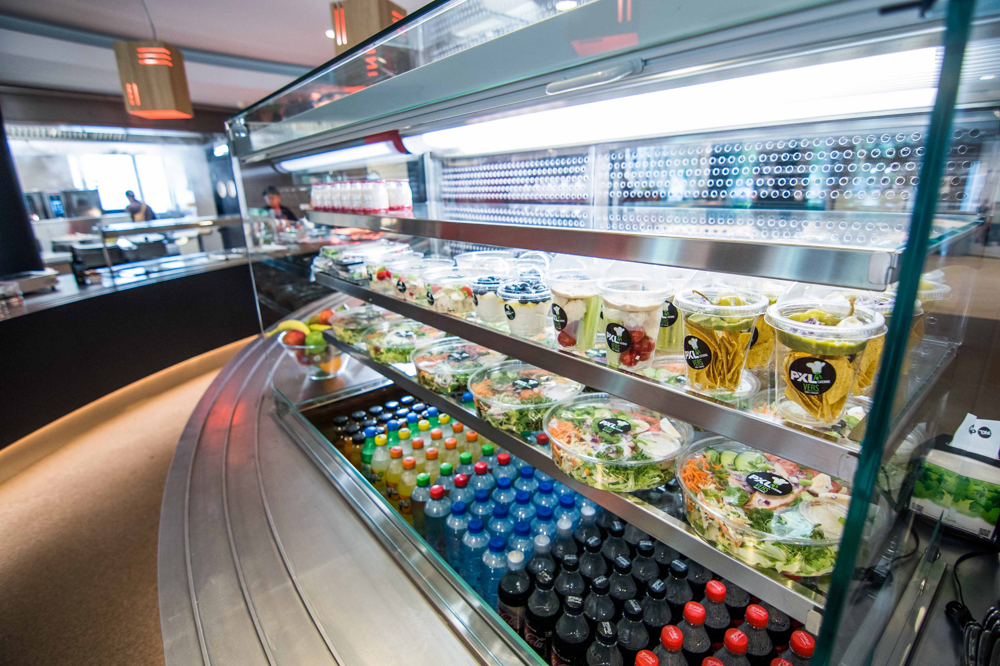

PXL - Catering
Uitgehongerd van hard blokken of behoefte aan nieuwe energie? Op Hogeschool PXL wordt
voor een gevulde maag
gezorgd.
Dagelijks zorgen we voor een ruim aanbod van kwaliteitsvolle, evenwichtige en afwisselende maaltijden die
bovendien gezond en prijsvriendelijk zijn. Wij streven ernaar om, in de mate van het mogelijke, te voldoen aan
de wensen van al onze klanten.
Alle studentenrestaurants van Hogeschool PXL worden uitgebaat in eigen beheer, dus niet door een externe
cateringfirma.
Wat het geheel uniek maakt, is dat elke locatie een ander aanbod heeft, zo goed mogelijk afgestemd op de gebruikers.
In het linkermenu vind je meer info over o.a. onze studentenrestaurants, cafetaria’s, de broodjeswinkels.
Heb je nog vragen of suggesties, dan kan je altijd contact opnemen met Rudy Rampelberg.

Er is ook een PXL - Catering delivery:
- Dagelijks, te bestellen voor 10 uur voor afhalen/levering.
- Leveringen enkel op Healthcare en PXL-Stem academie
- De gerechten die je kan bestellen vind je via pxl.12order.eu